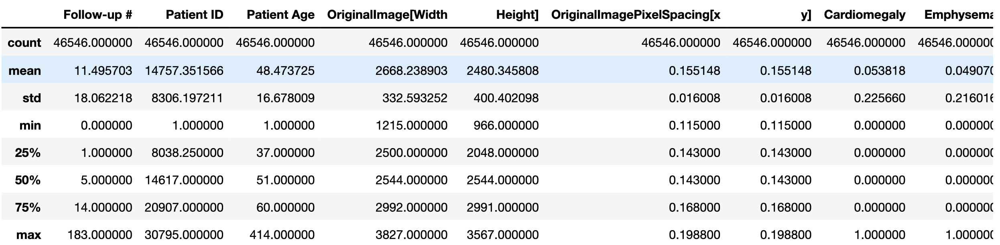

Transfer Learning for Chest Disease Detection
Spring 2020 @University of Texas at Dalls - My team of 6 Senior CS/SE students and I, in Senior Project course, had cooperated with Concentrix supervisors to build a web-based tool to detect and generate intents withdrawn from given utterances. Our tool helps Speech scientists without strong coding skills easily remove noise, correct misspelling, and detect intents. Our core AI section is developed around 2 separate models, Potential Intents and True Intents models which respectively generate potential intents and finalize mostly correct intents.
Problem:
Intente Detection problem belongs to the Natural Language Understanding domain. This problem have been considered and solved by Classification solutions, e.g. DiagFlow using BERT to classify a give utterance to a predefined intent class. Classification solutions has shown its power in classifying intents with accuracy above 90%. However, it's limit is the list of predefined-intent classes, which may require huge effort and time into prepareing truth data. Manually labeling intents for each utterance is a time-consuming and labor-consuming task that not all companies or scientists could do.
Example:
Utterance: I want to cancel payment, now please.
Intent: cancen payment
Tech used: VueJS, NodeJS, SQL, RESTful API, Tensorflow/Keras
NLP terms in use: Glove Embeddings, Tokenizer, Bidirectional Long-Short-Term-Memory (Bi-LSTM), Multi-Head Attention (MHA), and Conditional Random Field
Solution:
Our proposed solution is to develop a web application which archiecture consists of 3 separate RESTful API servers: UI - Backend/Database - AI. This design is to focus on the communication interface among servers which allows independent development, easy maintenance, and minimum changes in neighboring modules.

Our core AI-NLP section is built around 2 separate models named: Potential Intents and True Intents models for generating potential intents and finalizing correct intents respectively. Potential Intents model bases on Bidirectional Long-Short-Term-Memory (Bi-LSTM) and Conditional Random Field (CRF); and True Intents model bases on Multi-Layer-Perceptron model. The combination of these 2 modules achieves the intent detection at accuracy of 75%.
One conclusion here is the meadian age of all patients is 48.47. Obviously, if look at max row, we observed the odd age of 414 which would be changed to 100

All codes are available here